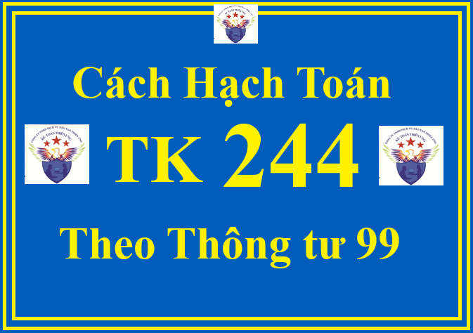

Tài khoản 244 - Ký quỹ, ký cược dùng để phản ánh số tiền mà doanh nghiệp đem đi ký quỹ, ký cược tại các doanh nghiệp, tổ chức khác trong các quan hệ kinh tế theo quy định của pháp luật. Doanh nghiệp không dùng tài khoản này để phản ánh các tài sản mà doanh nghiệp sử dụng để cầm cố, thế chấp.
Các khoản tiền đem ký quỹ, ký cược phải được theo dõi chặt chẽ và kịp thời để thu hồi khi hết thời hạn ký quỹ, ký cược. Trường hợp các khoản ký quỹ, ký cược của doanh nghiệp đã quá hạn nhưng chưa thu hồi được hoặc khó có khả năng thu hồi thì doanh nghiệp được trích lập dự phòng tổn thất tài sản tương tự dự phòng các khoản nợ phải thu khó đòi.
Doanh nghiệp phải theo dõi chi tiết các khoản ký quỹ, ký cược theo từng loại, từng đối tượng, kỳ hạn, nguyên tệ. Khi lập Báo cáo tài chính, những khoản ký quỹ, ký cược có kỳ hạn còn lại từ 12 tháng trở xuống được phân loại là tài sản ngắn hạn; Những khoản có kỳ hạn còn lại trên 12 tháng được phân loại là tài sản dài hạn.
Trường hợp doanh nghiệp có các khoản ký quỹ, ký cược là khoản mục tiền tệ có gốc ngoại tệ thì khi lập Báo cáo tài chính phải đánh giá lại theo tỷ giá mua bán chuyển khoản trung bình của ngân hàng thương mại nơi doanh nghiệp thường xuyên giao dịch tại thời điểm kết thúc kỳ kế toán.
Khi doanh nghiệp cầm cố, thế chấp bằng giấy chứng nhận quyền sở hữu hoặc sử dụng tài sản (như giấy chứng nhận quyền sở hữu hoặc sử dụng bất động sản, sổ tiết kiệm,...) thì doanh nghiệp không ghi giảm tài sản mà phải mở sổ theo dõi chi tiết và trình bày trên thuyết minh trên Báo cáo tài chính về việc sử dụng giấy chứng nhận quyền sở hữu hoặc sử dụng tài sản đem cầm cố, thế chấp.
1. Kết cấu và nội dung phản ánh của Tài khoản 244 - Ký quỹ, ký cược theo Thông tư 99/2025/TT-BTC
| Bên Nợ: | Bên Có: |
|
- Số tiền đã ký quỹ, ký cược;
- Chênh lệch tỷ giá hối đoái do đánh giá lại số dư các khoản ký quỹ, ký cược là khoản mục tiền tệ có gốc ngoại tệ tại thời điểm kết thúc kỳ kế toán (trường hợp tỷ giá ngoại tệ tăng so với đơn vị tiền tệ trong kế toán).
|
- Số tiền ký quỹ, ký cược đã nhận lại hoặc đã thanh toán;
- Khoản khấu trừ (ví dụ khoản bị phạt) vào tiền ký quỹ, ký cược (nếu có);
- Chênh lệch tỷ giá hối đoái do đánh giá lại số dư các khoản ký quỹ, ký cược là khoản mục tiền tệ có gốc ngoại tệ tại thời điểm kết thúc kỳ kế toán (trường hợp tỷ giá ngoại tệ giảm so với đơn vị tiền tệ trong kế toán).
|
|
Số dư bên Nợ:
Số tiền còn đang ký quỹ, ký cược tại thời điểm kết thúc kỳ kế toán.
|
2. Cách định khoản hạch toán TK 244 - Ký quỹ, ký cược theo Thông tư 99/2025/TT-BTC
a) Dùng tiền mặt hoặc tiền gửi không kỳ hạn để ký quỹ, ký cược, ghi:

Nợ TK 244 - Ký quỹ, ký cược
Có các TK 111, 112.
b) Khi nhận lại tiền ký quỹ, ký cược, ghi:
Nợ các TK 111, 112
Có TK 244 - Ký quỹ, ký cược.
c) Trường hợp doanh nghiệp không thực hiện đúng những cam kết, bị phạt vi phạm hợp đồng trừ vào tiền ký quỹ, ký cược, ghi:
Nợ TK 811 - Chi phí khác (số tiền bị trừ)
Có TK 244 - Ký quỹ, ký cược.
d) Trường hợp sử dụng khoản ký quỹ, ký cược thanh toán cho người bán, ghi:
Nợ TK 331 - Phải trả cho người bán
Có TK 244 - Ký quỹ, ký cược.